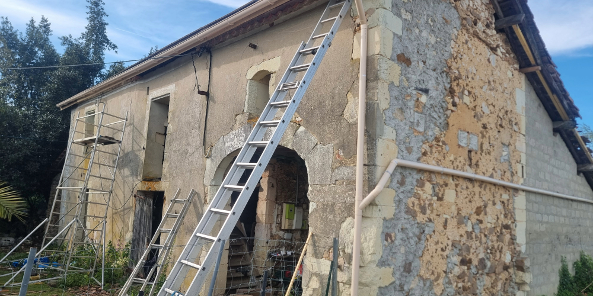
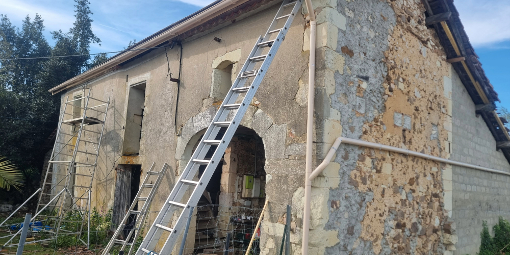

24 avril 2025 – Renforcement de la toiture avec des bastaings : entre théorie et réalité
Pour consolider une poutre fragilisée par l’humidité et les infiltrations, nous avons dû relever la toiture existante à l’aide d’un cric. La poutre d’origine, abîmée par le temps et l’eau, menaçait la stabilité de la structure. Avec mon père, nous avons installé des bastaings pour assurer un bon renfort.
On pensait que ce serait simple… mais en réalité, ça nous a pris 3 heures : la mise en pratique s’est révélée bien différente de ce qu’on avait imaginé en théorie !


25 avril 2025 – Installation des planches de rive et préparation pour la pose de la gouttière
Après avoir installé les planches de rive pour habiller et protéger les extrémités de la toiture, nous avons coupé les anciens poteaux qui dépassaient et gênaient. Cette étape était indispensable pour préparer correctement l'installation de la future gouttière, qui viendra bientôt en place pour assurer une bonne évacuation des eaux de pluie.

29 avril 2025 – Pose de la gouttière : installation réussie avec contrôle de la pente
Après avoir préparé les planches de rive et dégagé les anciens poteaux de toiture, nous avons poursuivi notre chantier avec la pose de la gouttière.
Pour garantir un bon écoulement de l'eau de pluie, nous avons installé la gouttière en respectant une pente d'environ 7%, conformément aux recommandations pour une évacuation efficace.
La mise en place a nécessité plusieurs ajustements pour assurer une pente régulière sur toute la longueur. Nous avons pris soin de fixer les crochets en suivant une légère inclinaison, en contrôlant régulièrement à l’aide d’un cordeau tendu.
Une fois la gouttière complètement fixée, nous avons procédé à des tests avec de l’eau : nous avons versé un pichet pour simuler de la pluie. Résultat : l’eau s’écoule parfaitement, sans stagnation ni débordement !
En complément, pour optimiser l’écoulement en attendant la prochaine réfection complète de la toiture, nous avons découpé de petits morceaux de tuiles. Cela permet de guider correctement l’eau jusqu’à la gouttière, même avec la toiture actuelle, et d’éviter toute infiltration indésirable sur la structure.

30 avril 2025 – Pose de la toiture avant et raccordement des gouttières.
Nous avons terminé la pose de la toiture sur la façade avant de la grange, ce qui change complètement l’apparence du bâtiment.
Nous en avons profité pour relier les deux gouttières latérales à une seule descente, afin de simplifier l’évacuation de l’eau de pluie.
Comme souvent, il a fallu s’adapter : les poutres de soutien, mal ajustées lors de l’ancienne pose de panneaux solaires, nous empêchaient d’installer correctement les planches de rive.
On a donc dû retailler proprement les extrémités pour pouvoir finir le travail proprement.
Encore une belle étape de franchie dans ce chantier qui avance pas à pas !
 
